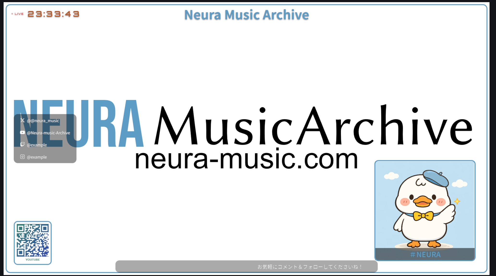
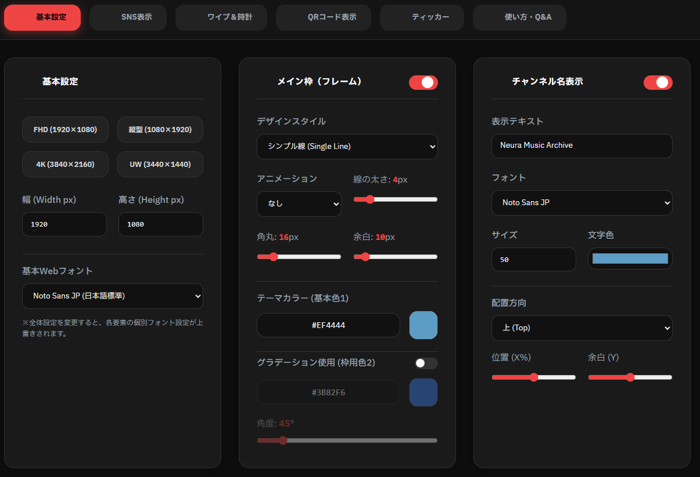

OBSの配信画面をブラウザで直感デザイン。
インストール不要のオーバーレイジェネレーター「OverlayGen」
配信のたびに画像編集ソフトを立ち上げ、レイヤーと格闘していませんか？あるいは、OBSのソース一覧がテキストや画像で埋め尽くされて管理不能になっていませんか？
「OverlayGen（オーバーレイ・ジェネレーター）」は、配信に必要な「枠（フレーム）」「SNSアイコン」「現在時刻」「動くテロップ」などをブラウザ上で直感的に組み合わせ、1つのHTMLファイルとして書き出せる画期的なツールです。
面倒なインストールは一切不要。今すぐブラウザで設定し、数分後には洗練された配信画面をOBSに映し出すことができます。

💡 OverlayGenで変わる3つの配信体験
ポチポチと設定を選ぶだけで、リアルタイムにプレビューが生成されます。
流れるテロップや自動更新される時計、切り替わるQRコードを標準搭載。
全ての要素を1つのHTMLに統合。OBSの「ブラウザソース」1つで完結します。
01. 🚀 すぐに使える（インストール不要）
OverlayGenは完全なWebブラウザ上で動作するアプリケーションです。PCにソフトをインストールしたり、ZIPファイルを解凍して初期設定を行ったりする手間は一切ありません。
- 指定のURL（https://neura-music.com/tools/overlay/） をお使いのブラウザで開くだけで即座に起動します。
- アカウント登録やログインも不要。誰でもすぐに使い始められます。
- 設定した内容はHTMLファイルとして手元に書き出されるため、オフラインの配信環境でも問題なく動作します。
02. 🛠️ カスタマイズ手順と主な機能
画面下部のタブを切り替えながら、配信画面をデザインしていきます。上部のプレビュー画面にはリアルタイムで結果が反映されます。

1. メイン枠＆基本設定
解像度（FHD, 4K, 縦型など）を選び、ベースとなる枠を決めます。「ネオン風」「上下シネマ帯」「点線」など多彩なスタイルと、グラデーションカラーを設定できます。
2. 時計＆動的テロップ（ティッカー）
四隅に配置できるデジタル時計（LIVEインジケーター付き）や、画面下部をスクロールするお知らせテロップをワンクリックで追加できます。
3. スマートSNS表示
X(旧Twitter)やYouTube、TwitchのアカウントIDを入力するだけ。配置場所（上下左右）に応じて、見栄え良く自動で縦並び・横並びに整列します。
4. ローテーションQRコード
複数のリンク（Webサイトやグッズページ）をQRコード化して配置可能。設定した秒数ごとに「フェード」や「スライド」で自動で切り替わります。
出力はボタンを1つ押すだけ
デザインが完成したら、画面右上のOBS用HTMLを出力するを押すだけで、obs_overlay.html がダウンロードされます。
💡 応用：パーツ単位の「ウィジェット」として自由自在に使う
OverlayGenは画面全体のオーバーレイを作るだけでなく、各要素のオン/オフを切り替えることでパーツ単体のウィジェットとしても活用できます。
- 個別パーツ特化：メイン枠や他の要素をすべてオフにし、「QRコード」や「ティッカー」だけをオンにして出力すれば、配信画面の好きな場所に置ける専用の独立ウィジェットに変身します。
- 自作PNGとの組み合わせ：「メイン枠」をオフにして出力すれば、自分がデザインしたお気に入りの背景画像やPNG枠の上に、OverlayGenの動く時計やテロップ、SNS情報だけを綺麗に重ねて配置する、といったハイブリッドな使い方も可能です。
03. 📺 OBSへの詳しい導入手順（ブラウザソース）
出力したHTMLファイルをOBS Studioに読み込ませる手順を詳しく解説します。手順4の「カスタムCSSの消去」が最も重要です。
✨ 一瞬で画面に追加できる「裏技」
ダウンロードした obs_overlay.html ファイルを、OBSのプレビュー画面（真っ黒な配信画面のエリア）に直接ドラッグ＆ドロップするだけで、ブラウザソースとして一発で追加されます。画面サイズにも自動でオートフィットするため非常に手軽です。
⚠️ 注意：ドラッグ＆ドロップによる追加は手軽ですが、解像度や配置のズレを防ぎ、完全に正確な位置へレイアウトしたい場合は、以下の「正規の手順」で行うことを推奨します。
ステップ 1：ブラウザソースを追加する
- OBSを起動し、追加したいシーンの「ソース」エリア左下にある 「＋」ボタン をクリックします。
- メニューから 「ブラウザ」 を選択します。
- 分かりやすい名前（例: オーバーレイレイヤー）をつけて「OK」を押します。
ステップ 2：出力したHTMLファイルを指定する
- プロパティ画面が開いたら、一番上にある 「ローカルファイル」 のチェックボックスをオンにします。
- 「参照」ボタンが現れるのでクリックし、OverlayGenからダウンロードした
obs_overlay.htmlを選択します。
ステップ 3：解像度（サイズ）を合わせる
- 幅 と 高さ の数値を、ジェネレーターで設定した数値と全く同じに入力します。
- （例：フルHDで作成した場合は、幅「1920」高さ「1080」と入力します）
ステップ 4：【最重要】カスタムCSSを削除する
下にスクロールすると「カスタムCSS」という入力欄があり、最初から body { background-color: rgba(0, 0, 0, 0); ... } のような文字が入っています。
この欄に入っている文字を「すべてバックスペースキーで削除して、完全に空」にしてください。
これを消さないと、背景が黒く塗りつぶされてしまい、ゲームやカメラの映像が透過されません。
ステップ 5：完了
最後に「OK」を押せば完了です。OBSの画面全体に、作成したオーバーレイが綺麗に重なって表示されます！
- フォントが適用されない場合：当ツールはインターネット経由で「Google Fonts」を読み込んで美しい日本語・欧文フォントを描画しています。配信PCがインターネットに接続されているか確認してください。
- 後から内容を変更したい場合：現バージョンでは設定の一時保存機能はありません。デザインやテロップの内容を変えたい場合は、再度ジェネレーターで作成し、HTMLを再ダウンロードしてOBSのブラウザソースの「ローカルファイル」を上書き指定してください。